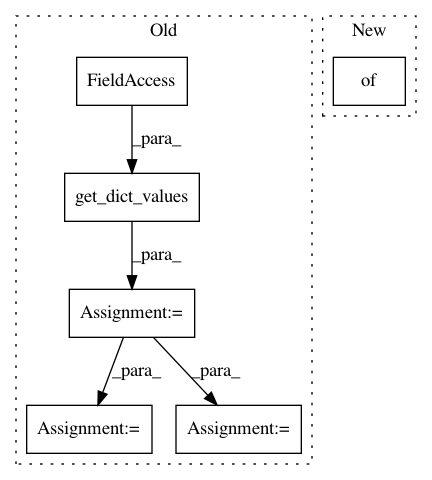

f7be4aa0fe70229549bb74b7e5834517224e5b1f,pixyz/distributions/distributions.py,DistGraph,sample,#DistGraph#Any#Any#Any#Any#Any#,316
Before Change
if not(set(x_dict) >= set(self.input_var)):
raise ValueError(f"Input keys are not valid, expected {set(self.input_var)} but got {set(x_dict)}.")
values = get_dict_values(x_dict, self.input_var, return_dict=True)
for factor in self.factors(sorted=True):
sample = self._wrapped_sample(factor, values, sample_option)
values.update(sample)
result_dict = delete_dict_values(values, self.marginalize_list)
if return_all:
output_dict = dict(delete_dict_values(x_dict, self.input_var))
output_dict.update(result_dict)
return output_dict
After Change
return sample
def sample(self, x_dict={}, batch_n=None, sample_shape=torch.Size(), return_all=True, reparam=False):
return self("sample", kwargs={"x_dict": x_dict, "batch_n": batch_n, "sample_shape": sample_shape,
"return_all": return_all, "reparam": reparam})
def _sample(self, x_dict={}, batch_n=None, sample_shape=torch.Size(), return_all=True, reparam=False):
In pattern: SUPERPATTERN
Frequency: 3
Non-data size: 6
Instances
Project Name: masa-su/pixyz
Commit Name: f7be4aa0fe70229549bb74b7e5834517224e5b1f
Time: 2020-08-02
Author: kaneko@weblab.t.u-tokyo.ac.jp
File Name: pixyz/distributions/distributions.py
Class Name: DistGraph
Method Name: sample
Project Name: masa-su/pixyz
Commit Name: 30028c6256de0cef715095e3994e396025c068d4
Time: 2020-05-04
Author: kaneko@weblab.t.u-tokyo.ac.jp
File Name: pixyz/distributions/flow_distribution.py
Class Name: InverseTransformedDistribution
Method Name: sample
Project Name: masa-su/pixyz
Commit Name: 57830b8c78a8f0997f9a7dc61d33a1bf1adb3ca5
Time: 2021-01-25
Author: kaneko@weblab.t.u-tokyo.ac.jp
File Name: pixyz/distributions/flow_distribution.py
Class Name: InverseTransformedDistribution
Method Name: sample